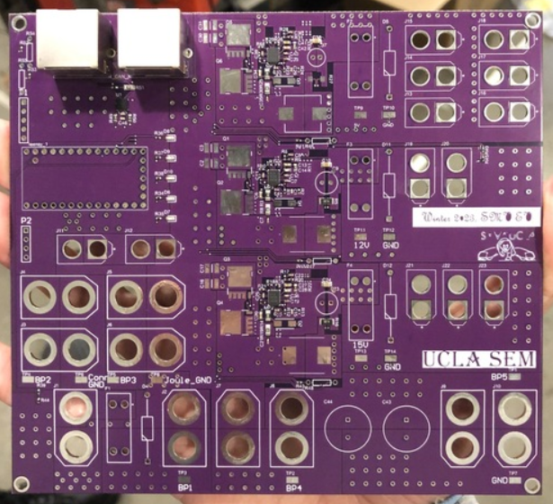
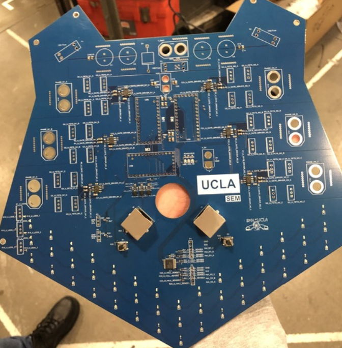
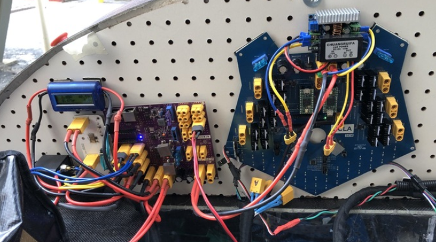

This past year, we integrated a new control center into our circuit: the Power Distribution Board. The board was meant to handle the task of stepping voltage from the battery down efficiently, so we could then direct that power to wherever it was needed, be that motor control or peripheral systems.
This board had 2 purposes:
Having all of our power being controlled through a single board also reduced the mess and amount of wires which came from multiple discrete buck converters and bus bars in the past. However, this was the first year we'd attempted to design our own buck converter, and we faced challenges with manufacturing and soldering, so we did not receive significant efficiency gains.
We've started work on a new board design this summer, so with careful planning and extensive circuit simulation, we should be able to make significant improvements in the board's efficiency.

One of the other projects Powertrain focused on this year was redesigning our motor control system.
In 2022, we had 2 separate control boards, one to drive each of our motors. We decided these boards could be consolidated into something simpler, so we created the Bear: a new board integrating control of both motors.
This made wiring simpler, since we wouldn't have to worry about sending out as many cables. We kept everything else mostly the same, but this coming year we plan to update the Bear to accomodate motor upgrades and a different control scheme that could give us significant efficiency and performance increases if executed properly.
Also, as the name implies, the board is in the shape of a bear!

Perhaps our most exciting project is the ongoing implementation of regenerative braking.
Traditionally we've used a hydraulic braking system, but last year we began testing electric brakes, which could provide smoother control if an effective braking system was developed. This eventually morphed into the development of a regenerative braking system. At a high level, regenerative braking captures energy that is otherwise lost during braking and uses it to help recharge the vehicle's battery.
We prototyped a board to add regen but ultimately did not use it during competition due to time constraints. However, we successfully implemented regen on an electric scooter as a test bed after gathering feedback from design reviews. This test bed doesn't model our car, but it provides a preliminary rig for proof of concept.
With regen implemented, we can obtain efficiency gains of a few percent. This may not sound significant, but every bit helps in the heat of competition.